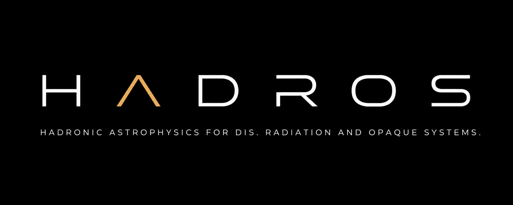
From spacetime to
hadronic cascades
An auditable platform for multiscale astrophysics in compact, opaque systems.
One question, many scales
How is a UHE particle born, propagated through Kerr spacetime, scattered in dense matter, and converted into an observable cascade?
A laboratory, not merely a plot
The interface organizes configuration, explicit execution, diagnostics, and provenance into a single narrative.
- black-hole mass and spin, camera, torus, and funnel selection;
- independent actions per stage—with no implicit execution;
- JSON/JSONL/CSV products, images, and 3D viewers;
- state, hashes, and validations preserved for every run.
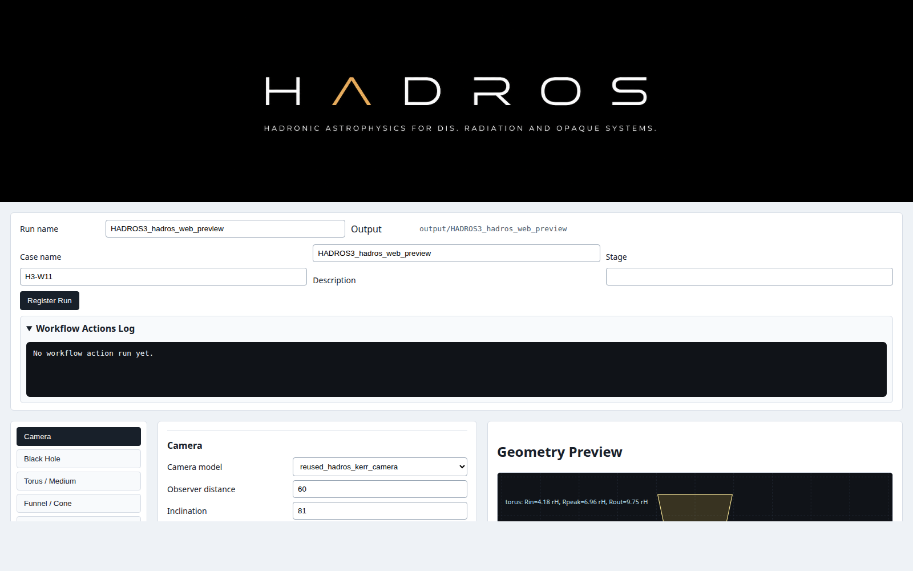
A chain with explicit boundaries
We begin with what the observer sees
The camera provides an intuitive view of the system and fixes conventions later reused by the Observer Bridge.
- black-hole mass and spin;
- distance, inclination, azimuth, and field of view;
- accelerated preview with audited north/south orientation;
- sky background plus schematic torus emission and absorption.
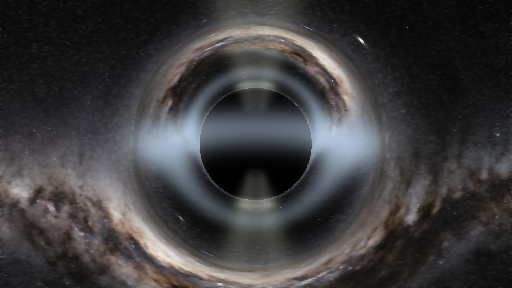
BH + torus + funnel + observer
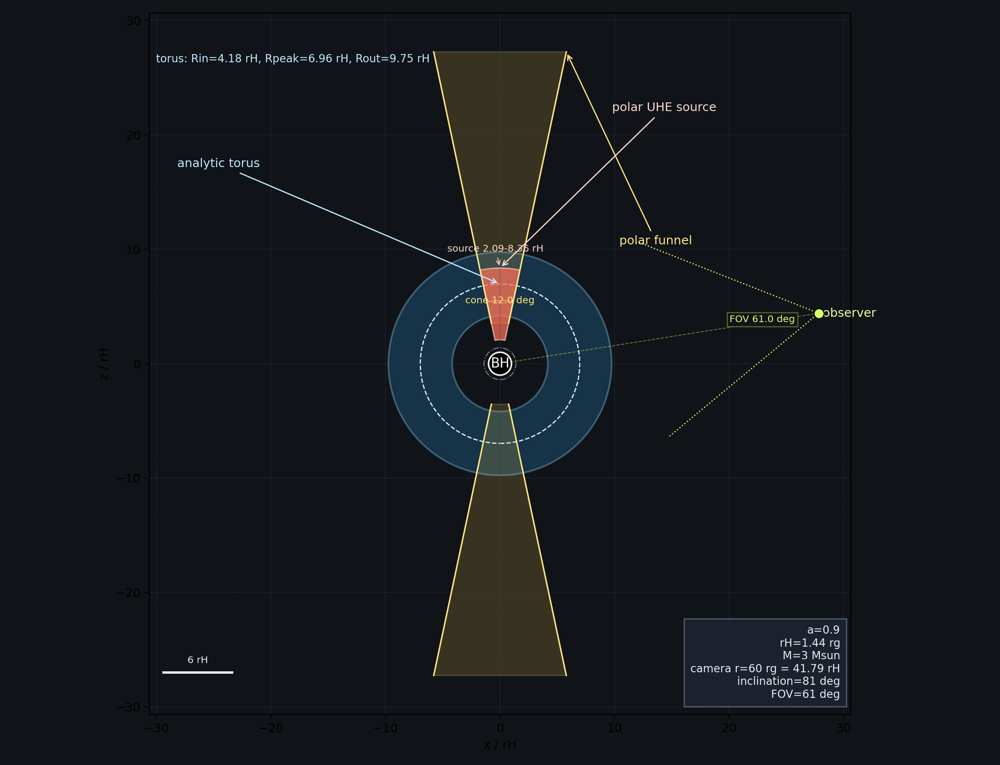
A single geometric description drives visualization, medium, source, and diagnostics.
Analytic torus
radial and Gaussian θ profile with queryable local density.
Polar funnel
UHE source domain and reference for the jets.
Horizon
physical stopping condition for geodesics.
Observer
camera basis and projection onto the image plane.
The source is born in a local frame
- sampling inside the polar funnel;
- monoenergetic or configurable energy distribution;
- isotropic directions in the local reference frame;
- fixed seeds and uniformity tests.
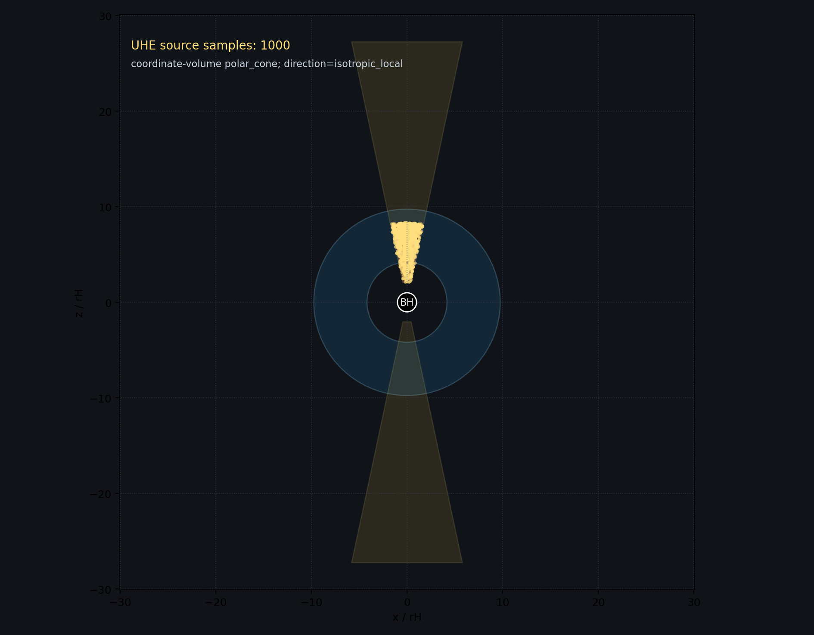
Null geodesics in Kerr spacetime
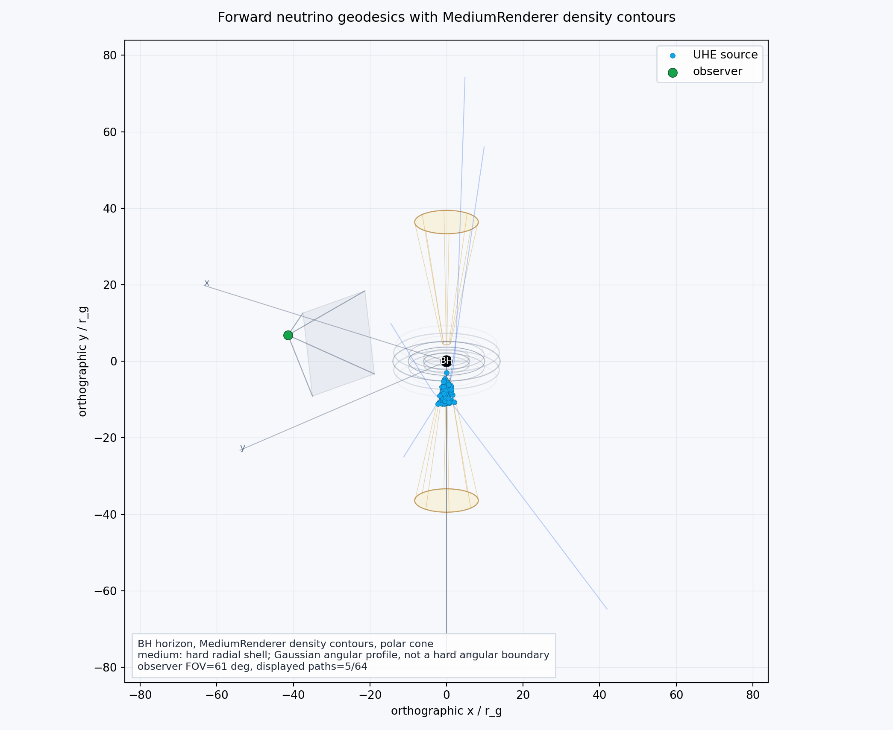
The C++ backend integrates four-momentum and monitors physical invariants along every path.
- outer escape, horizon crossing, or integration limit;
- segments carry frame and medium-density metadata.
Where the trajectory encounters matter
- covariant optical depth, invariant under affine reparameterization;
- vertex sampled from the within-segment τ CDF;
- local energy, density, and cross section preserved;
- diagnostic comparison between GBW and IIM models.
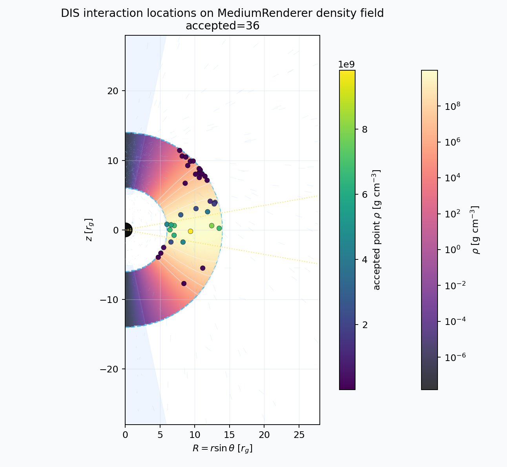
From the interaction to the camera plane
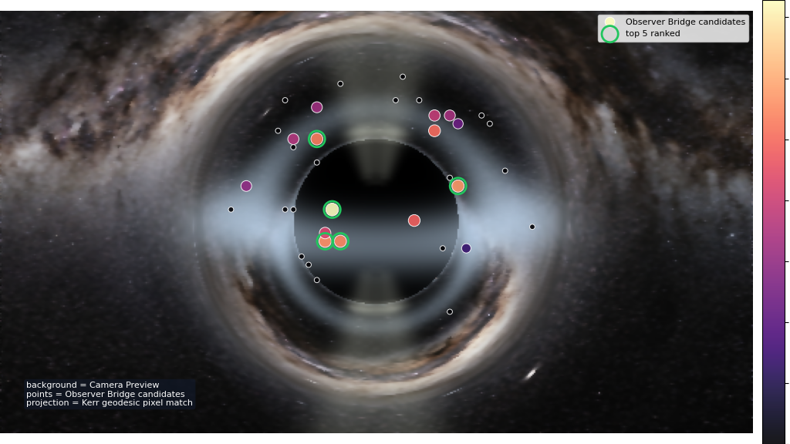
The bridge connects physical location, reverse camera geodesics, and downstream selection.
- projection with a camera-compatible tetrad basis;
- hemisphere and orientation audit;
- scores kept separate from physical weights;
- explicit selection for POWHEG.
One candidate may have multiple paths
Nearby rays on the image plane are grouped into physical branches, and one primary branch is selected without erasing the others.
- permutation-invariant clustering;
- branch score from population, proximity, and compactness;
- candidate → branch → POWHEG provenance;
- dedicated viewer for physical inspection.
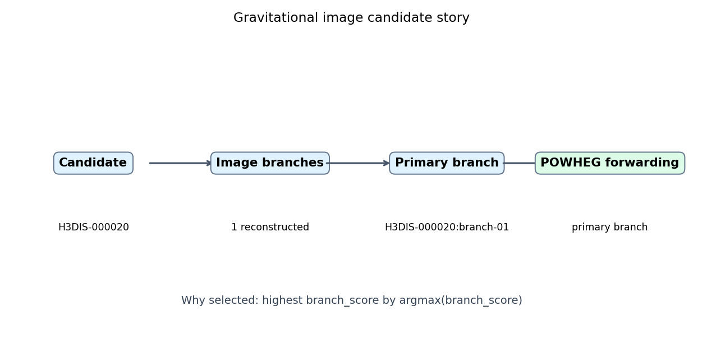
POWHEG turns candidates into LHE events
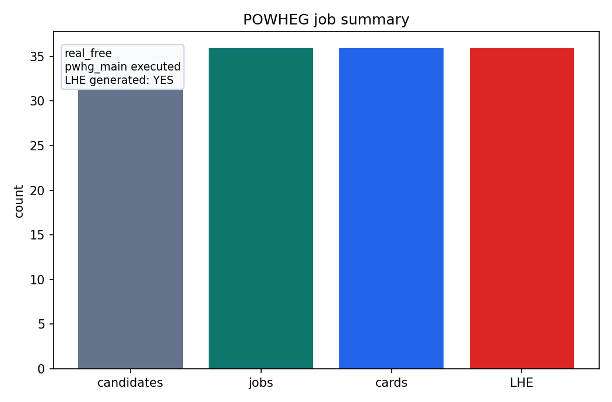
- one card per selected candidate;
- kinematics in the local matter frame;
- signed weights and IDWTUP normalization preserved;
- LO/NLO labels cannot be ambiguous;
- hashes link every LHE event to its source candidate.
From partons to the hadronic final state
POWHEG-vetoed FSR, hadronization, and decays produce transportable final particles.
Contract: local matter frame · GeV · mm · upstream IDs · physical weights.
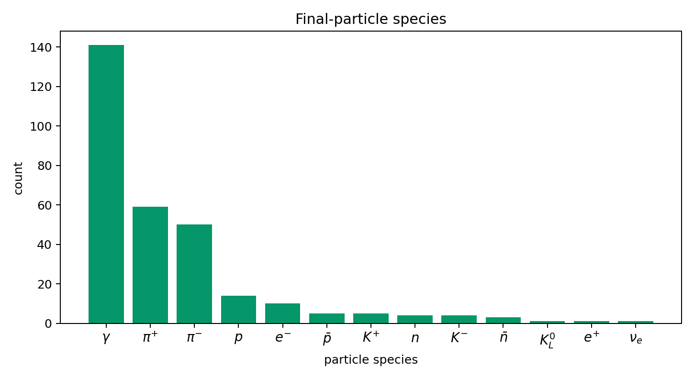
First: locate every site in the macro system
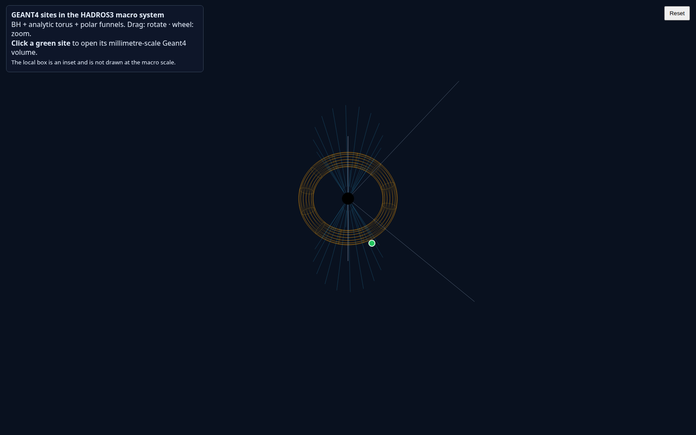
The user sees where every local calculation was applied—without drawing millimeters at a scale of tens of rg.
- black hole, torus, and system references;
- one marker per transported event/site;
- clickable bridge to the corresponding local volume;
- position and density inherited from the DIS vertex.
Then: inspect the microscopic cascade
Each site runs an isolated GEANT4 process with its own material and density.
- homogeneous tangent patch in the local matter frame;
- H/He mixture at the local torus density;
- primaries, secondaries, processes, and escapes;
- one job per site with bounded external parallelism;
- deterministic aggregation and atomic publication.
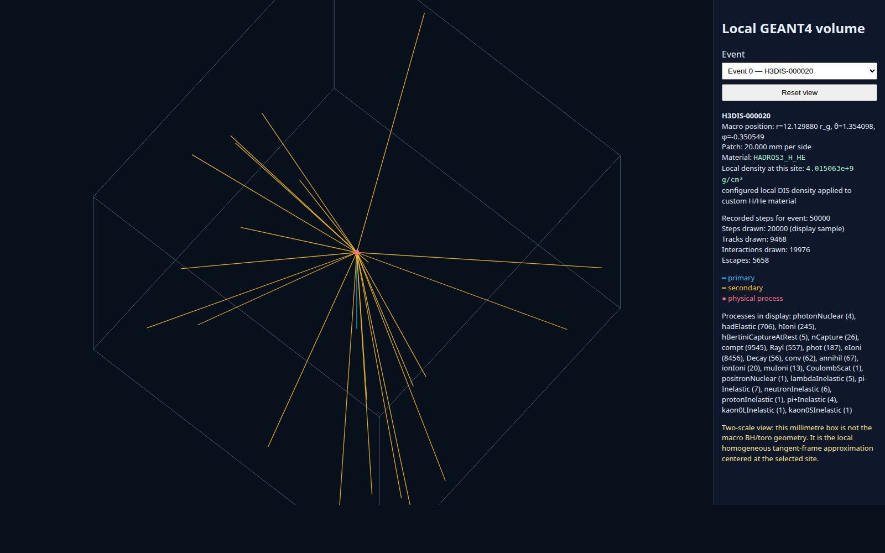
Running is not enough: it must pass
- ✓ domain, cardinality, and energy ledger;
- ✓ site isolation and density mapping;
- ✓ upstream hashes unchanged;
- ✓ 10 events completed with four site workers.
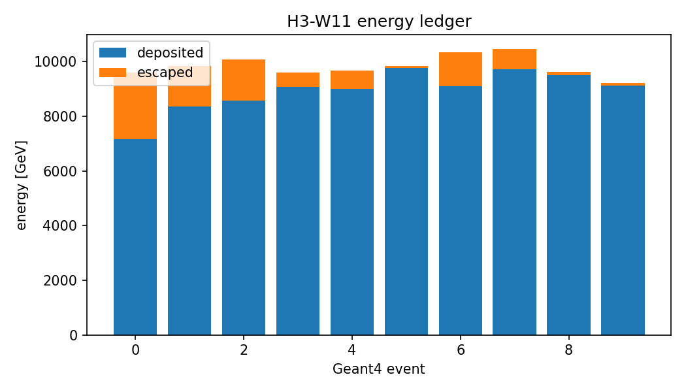
Three layers require three validations
1 · Neutrino DIS
Modern NLO/NNLO calculations constrain σ(E) and dσ/dy. FASER directly probes TeV neutrinos at the LHC.
HADROS3 target: binwise cross sections, inelasticity, ν̄/ν, PDF and nuclear uncertainties.
2 · Isolated event
PYTHIA receives one validated LHE collision and produces the shower, hadronization, and decays.
Density controls interaction probability and site metadata; it must not retune the same PYTHIA collision.
3 · Dense-medium transport
CALICE validates GEANT4 showers in ordinary detector matter—not in a degenerate H/He plasma.
The current high-density G4Material is a controlled extrapolation, not full astrophysical validation.
What 10⁹–10¹⁰ g cm⁻³ implies
The plasma is fully ionized and its electrons are relativistically degenerate unless the temperature is multi-MeV.
- screening, correlations, and Pauli occupation can alter transport;
- LPM and dielectric suppression can affect electromagnetic processes;
- collective stopping is not equivalent to summing independent atoms;
- hard nuclear collisions may remain local, while transport between them changes.
Data, generators, and dense-matter theory
PYTHIA 8.3 guide
Bierlich et al. (2022): showers, hadronization, decays, tunes, and LHA/HepMC interfaces.
FASER at the LHC
Energy-dependent νμ interaction cross section in the TeV range (2025).
High-energy DIS
Weigel, Conrad & Garcia-Soto (2024): σ and inelasticity from 50 GeV to UHE.
CALICE / GEANT4
Test-beam validation of hadronic shower models in granular steel calorimeters.
Degenerate transport
Potekhin, Pons & Page: transport physics in compact-star matter.
Hidden dense sources
Murase & Ioka: secondary cooling and neutrino production in jets inside stars.
From a working pipeline to a validated prediction
DIS + PYTHIA closure
Compare σ and y with modern calculations; ≥10⁴ events/bin; four-momentum residual <5×10⁻⁸; exact charge and 1:1 cardinality.
GEANT4 benchmark + column scaling
Reproduce CALICE within combined uncertainty or 10%; require <2% changes at fixed ρL in the independent-center regime.
Numerical convergence + dense envelope
Production-cut/step convergence below 1%; bracket screening, LPM, degeneracy, and collective stopping systematics.
Interaction/decay competition + speed
Compare decay, interaction, loss, and escape times; validate any thinning or biasing against an unbiased sample at 2%.
Keep separate
event_generator_validated · geant4_benchmark_validated · dense-medium microphysics validation.
Initial scientific status
The first two can pass independently. Dense-medium microphysics must remain explicitly unvalidated until V6–V7 constrain it.
Explicit limits are part of the result
Already demonstrated
- Kerr geometry and camera;
- UHE source and null geodesics;
- covariant DIS and observer selection;
- POWHEG → PYTHIA → HepMC3;
- local GEANT4 per site and density.
Next frontier
- patch and production-cut convergence;
- equation of state and collective ultradense-matter effects;
- post-cascade Kerr transport;
- radiative transport and observable spectra;
- comparison with GRMHD models.
GEANT4 interpretation
FTFP_BERT treats the microscopic cascade in the configured material; it does not replace complete degenerate-plasma microphysics.
Statistical interpretation
Physical weights, observation scores, and statistical track weights remain separate in every contract.
One chain.
Many scales.
Clear contracts.
HADROS3 has reached local GEANT4 transport—while keeping every physical decision inspectable.
← → navigate · F fullscreen · O overview · N notes · ? help